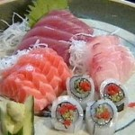

Compre uma comida Árabe e leve o refrigerante de graça.
Comidas Argentinas
Sushi

Também muito popular, o sushi é um prato de origem japonesa bastante conhecido. Existem diversas formas de preparar esses “rolinhos”, mas no geral eles são feitos com arroz e alga, com recheios de legumes ou peixes.
Tempurá
O tempurá é feito com vegetais ou frutos do mar fritos com uma camada de massa. O prato é típico da culinária japonesa e também é uma opção bastante saborosa para uma refeição oriental.
Sashimi
O sashimi é o prato japonês feito com fatias cruas de peixe ou frutos do mar, como salmão, atum e robalo. Ele é um dos pratos mais famosos do Japão e costuma ser servido com shoyu ou gengibre